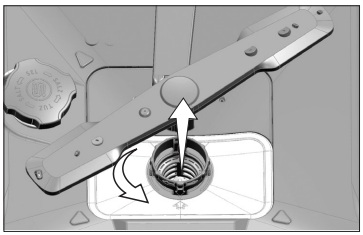

Преди почистване изключете щепсела от контакта и затворете крана за вода.
Избършете бутоните само с влажна кърпа. За вратата и гумените уплътнения използвайте влажна кърпа и мек препарат, който не драска.

Освобождаване на филтъра
Ако повредата остане, потърсете упълномощен сервиз.